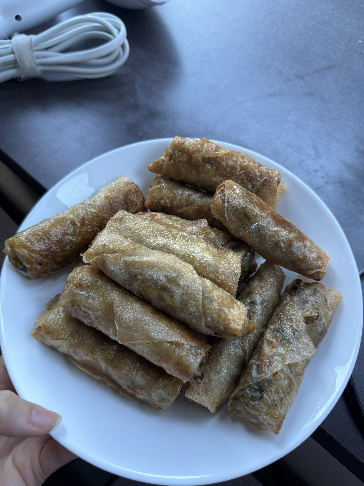
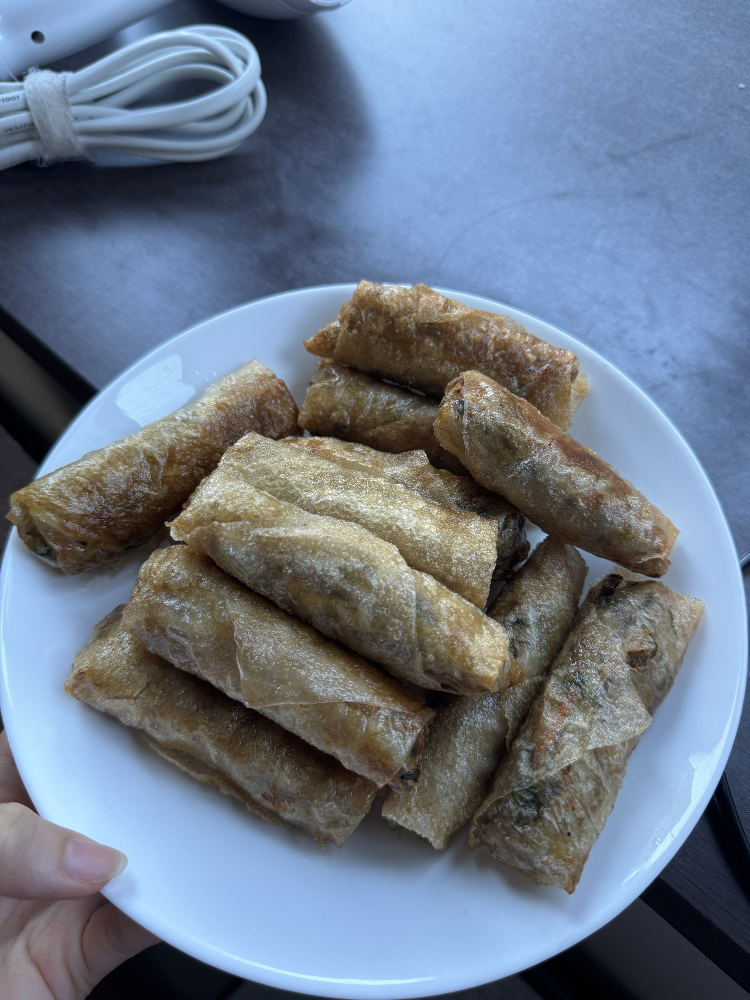

私の趣味は料理をすることです

料理が好きな理由
私の趣味は料理をすることです。休みの日には、よく家で新しいレシピに挑戦したり、友達や家族のためにごはんを作ったりします。
"料理を通して、創造力や集中力を高めることができると思っています。何より、人が喜んでくれる顔を見るのが一番の幸せです。"
特に和食や洋食を作るのが好きで、美味しくできたときにとても達成感を感じます。
最近作った料理たち

 


これからも色々な国の料理に挑戦していきたいです！